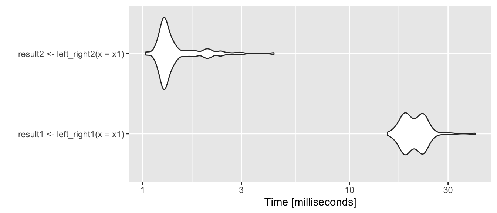

Reproducible Research, (some) Git, Good Programming Practices, go through Sample Homework
Robert Settlage
2021-09-06
Last updated: 2022-09-12
Checks: 6 1
Knit directory:
~/Projects/STAT5014_Fall2022/
This reproducible R Markdown analysis was created with workflowr (version 1.7.0). The Checks tab describes the reproducibility checks that were applied when the results were created. The Past versions tab lists the development history.
The R Markdown file has unstaged changes. To know which version of
the R Markdown file created these results, you’ll want to first commit
it to the Git repo. If you’re still working on the analysis, you can
ignore this warning. When you’re finished, you can run
wflow_publish to commit the R Markdown file and build the
HTML.
Great job! The global environment was empty. Objects defined in the global environment can affect the analysis in your R Markdown file in unknown ways. For reproduciblity it’s best to always run the code in an empty environment.
The command set.seed(20210816) was run prior to running
the code in the R Markdown file. Setting a seed ensures that any results
that rely on randomness, e.g. subsampling or permutations, are
reproducible.
Great job! Recording the operating system, R version, and package versions is critical for reproducibility.
Nice! There were no cached chunks for this analysis, so you can be confident that you successfully produced the results during this run.
Great job! Using relative paths to the files within your workflowr project makes it easier to run your code on other machines.
Great! You are using Git for version control. Tracking code development and connecting the code version to the results is critical for reproducibility.
The results in this page were generated with repository version 2426844. See the Past versions tab to see a history of the changes made to the R Markdown and HTML files.
Note that you need to be careful to ensure that all relevant files for
the analysis have been committed to Git prior to generating the results
(you can use wflow_publish or
wflow_git_commit). workflowr only checks the R Markdown
file, but you know if there are other scripts or data files that it
depends on. Below is the status of the Git repository when the results
were generated:
Untracked files:
Untracked: analysis/Week_3_Websites_Github.Rmd
Unstaged changes:
Modified: analysis/Week_2_Reproducible_research_Git_Good_Programming_Practices.Rmd
Modified: analysis/_site.yml
Note that any generated files, e.g. HTML, png, CSS, etc., are not included in this status report because it is ok for generated content to have uncommitted changes.
These are the previous versions of the repository in which changes were
made to the R Markdown
(analysis/Week_2_Reproducible_research_Git_Good_Programming_Practices.Rmd)
and HTML
(docs/Week_2_Reproducible_research_Git_Good_Programming_Practices.html)
files. If you’ve configured a remote Git repository (see
?wflow_git_remote), click on the hyperlinks in the table
below to view the files as they were in that past version.
| File | Version | Author | Date | Message |
|---|---|---|---|---|
| Rmd | ca0b32a | rsettlag | 2022-09-06 | adding week 2 |
| html | ca0b32a | rsettlag | 2022-09-06 | adding week 2 |
Today’s Agenda
- Review the concepts of Reproducible Research
- Review Git
- Good Programming Practices
- Go through Sample Homework
Reproducible Research - Review
This IS (always) the scenario:
You had worked 6 months to analyze a data set. Someone else analyzes the
data and comes to different conclusions. How good are your
notes???
Answer: Awesome, because you annotated your code with text to create a RR compendium
Reproducible Research - Concepts
Basically just switching the role of code and comments in writing software
Guide to this topic here: http://ropensci.github.io/reproducibility-guide/
In general, we should weave code and text into a complete reference of our work. The document should:
- download or otherwise load/generate data
- reproduce steps to munge data
- recreate analysis steps
- create figures and tables
- explain any and all steps along the way
- end with conclusions drawn
- optionally add suggestions for future experiments
Check out Sample Homework
https://rsettlage.github.io/STAT5014_Fall2022/SampleHomework.html
Version Control
What is version control - a system for storing data and tracking changes.
- Why should I use version control?
http://stackoverflow.com/questions/1408450/why-should-i-use-version-control - R and version control for the solo data analyst
http://stackoverflow.com/questions/2712421/r-and-version-control-for-the-solo-data-analyst
Thoughts or comments??
Version Control and Git
Git is essentially a database of snapshots of the project directory tree. You decide when and what to take snapshots of and if you using GitHub (or similar) when to push a copy to a remote repository.
The basic workflow is:
- git pull
- do work
- git pull to make sure you have latest files
- git add <your changed file> tells
git what change you care about
- git commit -m “some INFORMATIVE message about the
changes”
- git push to the repository (local or remote)
- repeat
When in doubt, try git status to get, well, the local repo status
Git file states
- Untracked - files that have not been added to the database
- Committed - data is safely stored in your local database
- Modified - file is changed but not committed it to your database
yet
- Staged - a modified file in its current version will go in next commit snapshot

Git file lifecycle
Back to Reproducible Research Analysis
From Hadley Wickham & Garrett Grolemund’s R for Data
Science
http://r4ds.had.co.nz

Good Programming Practices
Most analysis will require some amount of programming (scripting). As we program, we should strive to create readable and reusable code. The art of creating good code is captured in the broad and opinionated topic of Good Programming Practices. You will devolop your own style, but it would be good to start with some guidance from some experts.
Google’s R Style Guide https://google.github.io/styleguide/Rguide.xml
Hadley Wickam’s Style Guide: http://adv-r.had.co.nz/Style.html
Good Programming Practices cont
Remember: ultimate goal is Reproducible Research.
To enable this, we need well documented (annotated)
readable code.
- variable/object names
- nouns describing what the object holds, e.g. originaData instead of
d
- DO NOT use existing variables or functions, e.g. T<-1000
- nouns describing what the object holds, e.g. originaData instead of
d
- function formation
- function names should be verb associated with the function
purpose
- comment both function purpose and required arguments
- arguments should have defaults (my personal preference)
- my preference is to explicitly return a value
- function names should be verb associated with the function
purpose
- commenting rules
- comment your code!! ’nough said?
- comment your code!! ’nough said?
- indent within logical blocks of code !!
- indenting improves the readability of the code by orders of magnitude!
Functions
A function is an object that takes some input objects (args) and produces some output objects. All work in R is done in functions. ‘[<-’(animals,4,“duck”)
dataA<-1;dataB<-2
BAD<-function(x){
mean(c(x,dataA))
}
computeMeanGOOD<-function(x=3,y=5){
# quick function to compute the geometric mean of two numbers, x and y
# returns geometric mean
if (!is.numeric(x) || !is.numeric(y)) stop("both x and y must be numeric")
return((x+y)/2)
}
BAD(x=dataB)
computeMeanGOOD(x=dataA,y=dataB)GOOD functions include passing in ALL necessary data. If we do not do this, we can have MAJOR issues with variable scope that is often difficult to troubleshoot. Ideally our code also includes error checking.
Variable scope
R uses Lexical scoping rules. What tha?
https://darrenjw.wordpress.com/2011/11/23/lexical-scope-and-function-closures-in-r/
Totally recommend subscribing to Darren’s blog AND reading all his past
posts.
http://andrewgelman.com/2014/01/29/stupid-r-tricks-random-scope/
Another good site. Also has a few great stats books.
While we are at it, r-bloggers has many useful tidbits. https://www.r-bloggers.com
z <- 1; a <- 1
m <- function(){a <- 2; return(c(a,z)) }
m(); a
a <- 1; b <- 2
f<-function(x){ a*x + b }
## what about this one??
g<-function(x){ a <<- 2; b <- 1; print(objects()); f(x) }
g(2)FOR statement
Often, we want to loop through a set number of items or do a task a predetermined length of time. Can add additional controls via break and next. To get help on functions type ?“for”
Iter <- 5
cumIndex <- 0
for(i in 1:Iter){
#if(i %% 2==1) next
cumIndex <- cumIndex + 1
#if(cumIndex>3) break
}
print(cumIndex)[1] 5
Warning: The above code chunk cached its results, but
it won’t be re-run if previous chunks it depends on are updated. If you
need to use caching, it is highly recommended to also set
knitr::opts_chunk$set(autodep = TRUE) at the top of the
file (in a chunk that is not cached). Alternatively, you can customize
the option dependson for each individual chunk that is
cached. Using either autodep or dependson will
remove this warning. See the
knitr cache options for more details.
If ELSE statement
A powerful addition to any program is the ability to change the course of the program as conditions change. In R, one such flow change statement is the if else statement.
Iter <- 20
cumSumODDS <- 0
cumSumEVENS <- 0
for(i in 1:Iter){
if(i %% 2 == 1){
print(paste0("i=",i," is odd"))
cumSumODDS = cumSumODDS + i
}else{
print(paste0("i=",i," is even"))
cumSumEVENS = cumSumEVENS + i
}
}[1] "i=1 is odd"
[1] "i=2 is even"
[1] "i=3 is odd"
[1] "i=4 is even"
[1] "i=5 is odd"
[1] "i=6 is even"
[1] "i=7 is odd"
[1] "i=8 is even"
[1] "i=9 is odd"
[1] "i=10 is even"
[1] "i=11 is odd"
[1] "i=12 is even"
[1] "i=13 is odd"
[1] "i=14 is even"
[1] "i=15 is odd"
[1] "i=16 is even"
[1] "i=17 is odd"
[1] "i=18 is even"
[1] "i=19 is odd"
[1] "i=20 is even" cumSumEVENS[1] 110 cumSumODDS[1] 100While loop
A while loop can be thought of as a combination of a for loop and an if statement. Do until condition is true. In any iterative function, it is a good idea to a) have a progress indicator and b) have a fail safe.
dummyVar <- 0
iter <- 0
while(dummyVar<100){
dummyVar = dummyVar + 1
## PROGRESS
if(dummyVar %% 5 == 0){
print(paste0("loop step=",dummyVar))
}
## FAIL SAFE
if(iter>50){
break
}else{
iter=iter+1
}
}[1] "loop step=5"
[1] "loop step=10"
[1] "loop step=15"
[1] "loop step=20"
[1] "loop step=25"
[1] "loop step=30"
[1] "loop step=35"
[1] "loop step=40"
[1] "loop step=45"
[1] "loop step=50"Timing
As you start to make functions, it is a good idea to think about how long things take.
Really good blog on this here: https://www.r-bloggers.com/5-ways-to-measure-running-time-of-r-code/
Consider the following code and timings:
library("microbenchmark")
##takes a vector and a value, determines if the elements of the vector are to the right/left
left_right1<-function(x = c(0.1,0.9), bar = 0.5){
temp<-NULL
for(i in seq_along(x)){
temp[i] <- (x[i]>bar)*1
}
return(temp)
}
left_right2 <- function(x = c(0.1,0.9), bar = 0.5){
ifelse(x>bar,1,0)
}
x1<-rnorm(n = 50000,mean=0.5)
times<-microbenchmark(result1<-left_right1(x=x1),result2<-left_right2(x=x1),times = 100, unit = "ms",control=list(warmup=0))Warning in microbenchmark(result1 <- left_right1(x = x1), result2 <-
left_right2(x = x1), : Could not measure overhead. Your clock might lack
precision.Warning in microbenchmark(result1 <- left_right1(x = x1), result2 <-
left_right2(x = x1), : less accurate nanosecond times to avoid potential integer
overflowsTimings plot
Coordinate system already present. Adding new coordinate system, which will replace the existing one.
| Version | Author | Date |
|---|---|---|
| ca0b32a | rsettlag | 2022-09-06 |
Bit more on functions in R
https://csgillespie.github.io/efficientR/programming.html
Everything in R is essentially a function call. Generally, this means at some point the function call will make a call to the underlying C/Fortran code.
“A golden rule in R programming is to access the underlying C/Fortran
routines as quickly as possible; the fewer functions calls required to
achieve this, the better. For example, suppose x is a
standard vector of length n. Then:”
Example
x = x + 1has a single call to the + function,
whereas:
for(i in seq_len(n))
x[i] = x[i] + 1has:
- n function calls to +;
- n function calls to the [ function;
- n function calls to the [<- function;
- one call to the for function;
- one call the the seq_along function.
We will check this out in a bit.
Memory allocation – Method 1
Memory management is the Achilles’ heel of many programming languages. If we are careful in our programming, we can alleviate many of the issues.
Consider the following examples given in Gillespie’s R Book:
Method 1: create empty vector, grow vector to final size
method1 = function(n) {
vec = NULL # Or vec = c()
for(i in seq_len(n))
vec = c(vec, i)
vec
}Memory allocation – Method 2
Method 2: create vector of final length and change values via subscripting
method2 = function(n) {
vec = numeric(n)
for(i in seq_len(n))
vec[i] = i
vec
}Memory allocation – Method 3
Method 3: create final object directly
method3 = function(n) seq_len(n)Thoughts on the 3 methods??
Memory and functions
This topic is really intertwined with lexical scoping. The basic idea is that R manages objects by creating environments. Each environment is essentially a bag of names pointing to thier associated memory space. Creating a function, creates a new environment. The environment lives as long as the function is active.
http://adv-r.had.co.nz/Functions.html#lexical-scoping
http://adv-r.had.co.nz/Environments.html
As you program in R more, you will want to pay special attention to memory management and function calls.
– memory used
– speed issues
look at memory size of objects look at memory use of R look at memory use of R during a function call with large object
sessionInfo()R version 4.2.1 (2022-06-23)
Platform: aarch64-apple-darwin20 (64-bit)
Running under: macOS Monterey 12.4
Matrix products: default
BLAS: /Library/Frameworks/R.framework/Versions/4.2-arm64/Resources/lib/libRblas.0.dylib
LAPACK: /Library/Frameworks/R.framework/Versions/4.2-arm64/Resources/lib/libRlapack.dylib
locale:
[1] en_US.UTF-8/en_US.UTF-8/en_US.UTF-8/C/en_US.UTF-8/en_US.UTF-8
attached base packages:
[1] stats graphics grDevices utils datasets methods base
other attached packages:
[1] microbenchmark_1.4.9
loaded via a namespace (and not attached):
[1] Rcpp_1.0.9 highr_0.9 pillar_1.8.1 compiler_4.2.1
[5] bslib_0.4.0 later_1.3.0 jquerylib_0.1.4 git2r_0.30.1
[9] workflowr_1.7.0 tools_4.2.1 digest_0.6.29 gtable_0.3.1
[13] jsonlite_1.8.0 evaluate_0.16 lifecycle_1.0.1 tibble_3.1.8
[17] pkgconfig_2.0.3 rlang_1.0.5 DBI_1.1.3 cli_3.4.0
[21] rstudioapi_0.14 yaml_2.3.5 xfun_0.32 fastmap_1.1.0
[25] dplyr_1.0.10 stringr_1.4.1 knitr_1.40 generics_0.1.3
[29] fs_1.5.2 vctrs_0.4.1 sass_0.4.2 tidyselect_1.1.2
[33] grid_4.2.1 rprojroot_2.0.3 glue_1.6.2 R6_2.5.1
[37] fansi_1.0.3 rmarkdown_2.16 farver_2.1.1 purrr_0.3.4
[41] ggplot2_3.3.6 magrittr_2.0.3 whisker_0.4 scales_1.2.1
[45] promises_1.2.0.1 codetools_0.2-18 htmltools_0.5.3 assertthat_0.2.1
[49] colorspace_2.0-3 httpuv_1.6.5 utf8_1.2.2 stringi_1.7.8
[53] munsell_0.5.0 cachem_1.0.6